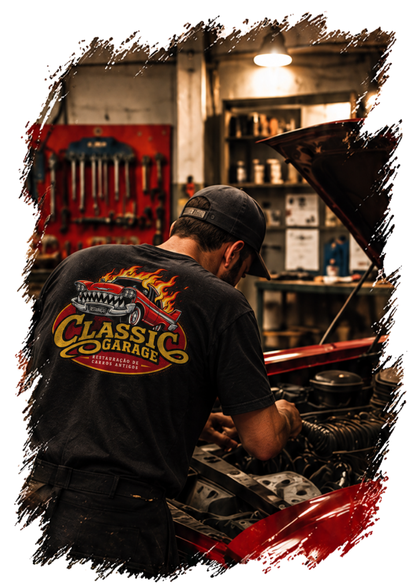
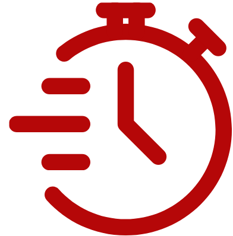
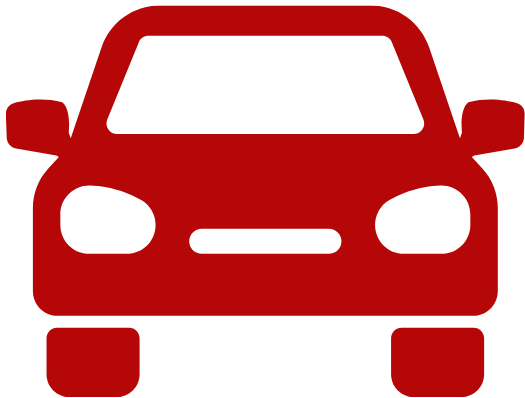

Sobre nós
Mais quecarros antigos,é a nossa paixão.
Somos apaixonados por histórias sobre rodas. Aqui, cada
projeto é tratado com o respeito, o cuidado e a dedicação
que um clássico merece. Nossa missão é devolver vida a
carros que marcaram época, preservando sua essência e
sua originalidade.
Nossa história
Do sonho
à oficina.
Tudo começou com um simples sonho:
o de transformar carros antigos em novas
histórias. O que era apenas um hobby, logo se
tornou um propósito.
Com o tempo, vimos que não estávamos
sozinhos. Cada cliente que chegava com seu
clássico trazia consigo uma história, uma
lembrança, um carinho. E foi assim que nos
tornamos referência em restauração de
carros antigos na região.
Hoje, seguimos com o mesmo entusiasmo no
primeiro dia, sempre buscando o melhor para
cada projeto.

Por que escolher a gente?
Compromisso com
cada detalhe.
Técnica especializada
Profissionais experientes e apaixonados por carros antigos.
Qualidade e convicção
Usamos peças de qualidade para garantir os melhores resultados.

Respeito ao seu tempo
Cumprimos os prazos e mantemos você informado em todas as etapas.

Paixão por clássicos
Mais do que um trabalho, é o que nos move todos os dias.
Vamos conversar?
Seu clássico
merece o melhor.
Se você tem um carro antigo e quer restaurar, ou
apenas quer tirar alguma dúvida, entre em contato.
Será um prazer conviver com você!